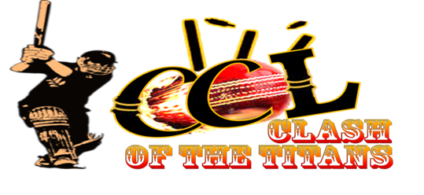

Page 2
Standings
User: {{params.team-id}}
This is {{params.team-id}}'s section
Users
This is the users section
AddyRob
Chuck
Sam
User: {{params.name}}
This is {{params.name}}'s section
Contact
This is the contact section
Hello, World!